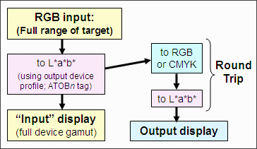
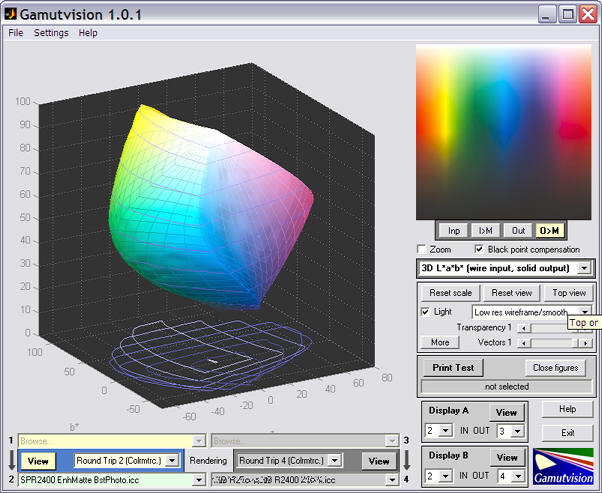
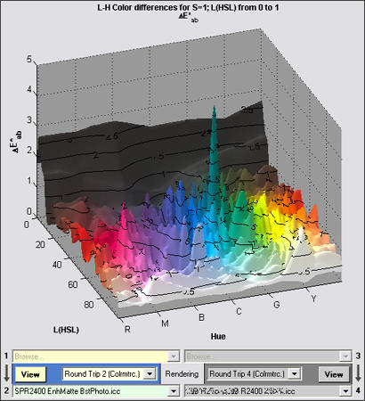
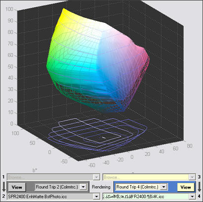
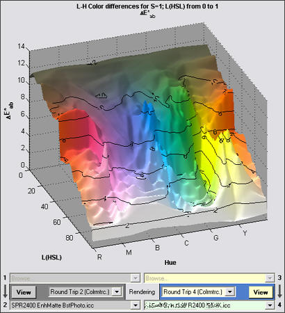

Gamutvision has several has several approaches to evaluating printer profile quality, each of which illustrates different aspects of quality. The simplest is a visual observation of the output test pattern (after gamut mapping; best if the output is mapped to the monitor color space: ). Irregularities and large defects in printer response are plainly visible. The most comprehensive is Print Test, but it's also the most time-consuming, and it depends on careful technique and a well-characterized scanner for accurate results.
This page describes the use of Round Trip rendering intents for screening profiles and identifying potential problems. Round trip is an extremely fast way to test a printer profile's reversability, i.e., consistency. Round trip tests are described on p. 346 of Understanding Color Management by Abhay Sharma.
A round trip test consists of the following steps
|
 |
Round trip tests are normally done with relative colorimetric intent, but perceptual rendering intent is also of interest.
Performing a round trip test is extremely simple. Select a printer profile for either of the output profiles (2 or 4) and select either Round trip n (Percept.) or Round trip n (Colrmtrc.) rendering intent. (n is either 2 or 4.) The input profile is grayed out when a round trip intent is selected.
We illustrate the round trip with two profiles, both for the Epson R2400 printer with matte fine art papers. One performs well; the other has a problem.

This is the 3D L*a*b* (wire input, solid output) plot for the Epson R2400 with Enhanced Matte paper (BstPhoto profile), round-tripped with colorimetric rendering intent. From this image it's difficult to see any difference between input and output. That's a good sign. The output image (upper right) should be ignored: it has no valid meaning for round trip intents.
The 2D/3D HL Color difference plot, set to 3D HL (HSL) background and ΔE*ab display, shows color differences very clearly. Except for a curious spike in the dark bluish-green spike (not that large), ΔE*ab is extremely low-- mostly less than 1. This plot has a number of options. It can also display ΔE*94 and ΔE*CMC as well as corresponding ΔC* values (similar to ΔE*, but omitting luminance difference). It can also be rotated and zoomed. |
 |
This is the 3D L*a*b* (wire input, solid output) plot for the Epson R2400 with a fine art paper. We omit the manufacturer's name because they may fix their profile. Their papers are excellent— only the profile is at fault. There is a large difference between the input and output L*a*b* gamuts for the shadow region: the output (solid) is weak. |
 |
The 2D/3D HL Color difference plot, set to 3D HL (HSL) background and ΔE*ab display, highlights the color differences in the shadow region. There are a number of limitations to the round trip test. Foremost among them is that it's difficult to tell where the problem lies: in the BToAn (PCS to device) tags, which affect the print, or the AToBn (device to PCS) tags, which affect soft proofing. But there are clues. This profile shows a large discrepancy between Dmax (maximum B&W density) with and without Black Point Compensation. BPC normally affects the shape of the B&W density response, but has little effect on Dmax. This indicates that the critical BToAn tag could be at fault. |
 |